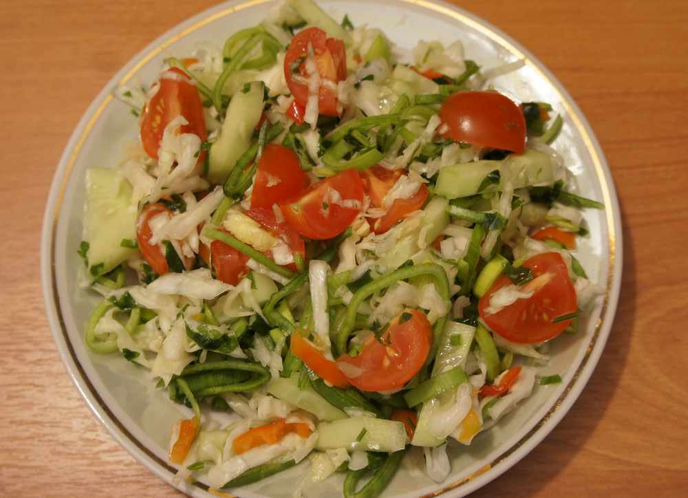

Популярные рецепты

Паста с томатным соусом
Простой и вкусный ужин за 30 минут.
Основные блюда

Овощной салат
Легкий и полезный перекус для всей семьи.
СалатыГороховый суп
Сытный и ароматный суп для холодных дней.
Супы